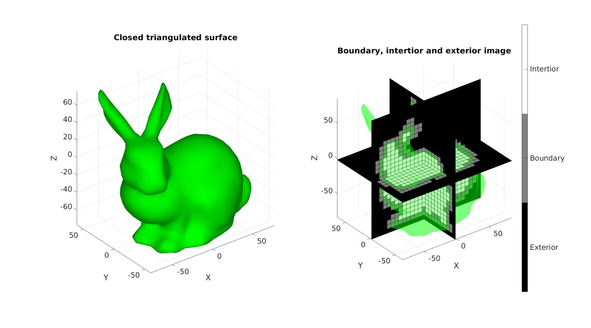
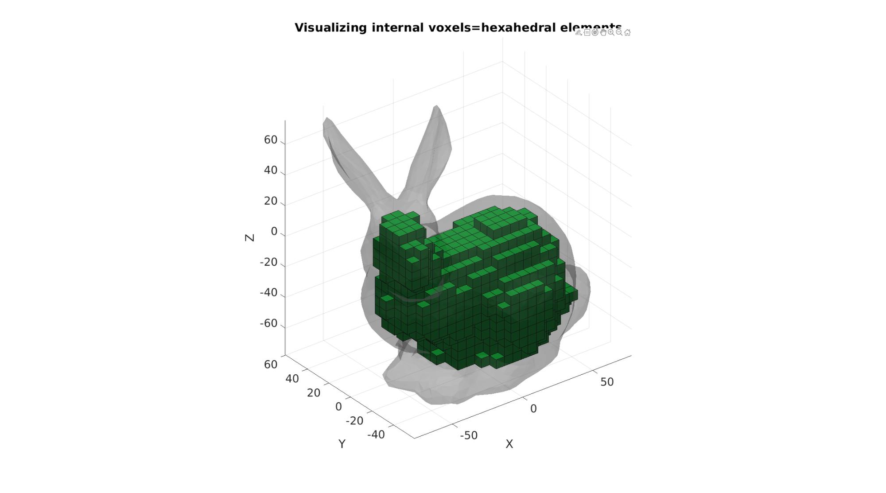
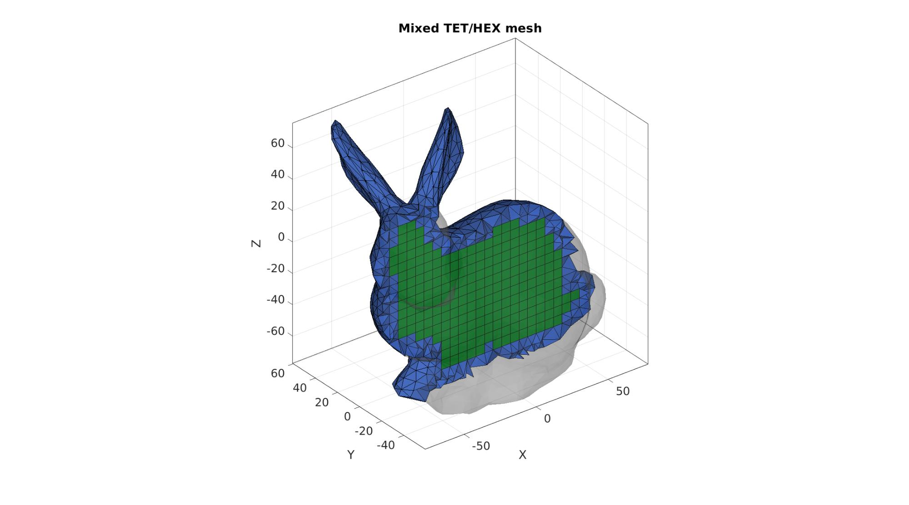
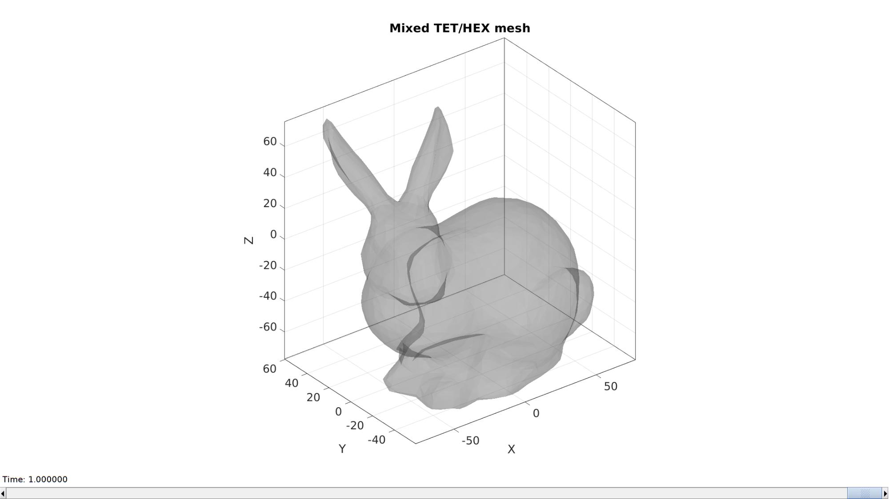

DEMO_MixedTetHexMeshing
Below is a demonstration of how to create a mixed mesh consisting of (linear) hexahedral and tetrahedral elements. The hexahedral mesh is regular while the tetrahedral mesh is derived using TetGen.
Contents
clear; close all; clc;
Plot settings for the examples below
fontSize=20; faceAlpha1=1; faceAlpha2=0.3; plotColors=gjet(4);
searchRadius=6;
CONVERTING A TRIANGULATED SURFACE TO AN IMAGE WITH DESIRED SIZE, VOXEL SIZE AND ORIGIN
Defining an example triangulated surface model
[Fs,Vs]=stanford_bunny;
Setting control parameters
% Defining the full set of possible control parameters voxelSize=6; % The output image voxel size. imOrigin=min(Vs,[],1)-voxelSize; imMax=max(Vs,[],1)+voxelSize; imSiz=round((imMax-imOrigin)/voxelSize); imSiz=imSiz([2 1 3]); %Image size (x, y corresponds to j,i in image coordinates, hence the permutation) % Using |triSurf2Im| function to convert patch data to image data [M,~]=triSurf2Im(Fs,Vs,voxelSize,imOrigin,imSiz);
Plotting the results
hf1=cFigure; subplot(1,2,1); title('Closed triangulated surface','FontSize',fontSize); xlabel('X','FontSize',fontSize);ylabel('Y','FontSize',fontSize); zlabel('Z','FontSize',fontSize); hold on; gpatch(Fs,Vs,'g','none'); axis equal; view(3); axis tight; grid on; set(gca,'FontSize',fontSize); camlight('headlight'); lighting phong; set(gca,'fontSize',fontSize); subplot(1,2,2); title('Boundary, intertior and exterior image','FontSize',fontSize); xlabel('X','FontSize',fontSize);ylabel('Y','FontSize',fontSize); zlabel('Z','FontSize',fontSize); hold on; gpatch(Fs,Vs,'g','none',faceAlpha2); L_plot=false(size(M)); L_plot(:,:,round(size(M,3)/2))=1; [Fm,Vm,Cm]=ind2patch(L_plot,double(M),'sk'); [Vm(:,1),Vm(:,2),Vm(:,3)]=im2cart(Vm(:,2),Vm(:,1),Vm(:,3),voxelSize*ones(1,3)); Vm=Vm+imOrigin(ones(size(Vm,1),1),:); gpatch(Fm,Vm,Cm,'k'); L_plot=false(size(M));L_plot(round(size(M,1)/2),:,:)=1; [Fm,Vm,Cm]=ind2patch(L_plot,M,'si'); [Vm(:,1),Vm(:,2),Vm(:,3)]=im2cart(Vm(:,2),Vm(:,1),Vm(:,3),voxelSize*ones(1,3)); Vm=Vm+imOrigin(ones(size(Vm,1),1),:); gpatch(Fm,Vm,Cm,'k'); L_plot=false(size(M));L_plot(:,round(size(M,2)/2),:)=1; [Fm,Vm,Cm]=ind2patch(L_plot,M,'sj'); [Vm(:,1),Vm(:,2),Vm(:,3)]=im2cart(Vm(:,2),Vm(:,1),Vm(:,3),voxelSize*ones(1,3)); Vm=Vm+imOrigin(ones(size(Vm,1),1),:); gpatch(Fm,Vm,Cm,'k'); colormap(gray(3)); caxis([0 2]); hc=colorbar; set(hc,'YTick',[1/3 1 5/3]); set(hc,'YTickLabel',{'Exterior','Boundary','Intertior'}); set(hc,'fontSize',fontSize); axis equal; view(3); axis tight; grid on; set(gca,'FontSize',fontSize); set(gca,'fontSize',fontSize); drawnow;
GET HEXAHEDRAL ELEMENT SET
L_model=(M==2); %Interior&Boundary choosen here %Defining erosion/dilation kernel k=3; p=k-round(k./2); hb=zeros(3,3); hb(2,2,2)=1; hb(2,2,1)=1; hb(2,2,3)=1; hb(1,2,2)=1; hb(3,2,2)=1; hb(2,3,2)=1; hb(2,1,2)=1; L_model_rep=zeros(size(L_model)+(2.*p)); L_model_rep(p+(1:size(L_model,1)),p+(1:size(L_model,2)),p+(1:size(L_model,3)))=L_model; L_model_blur = convn(double(L_model_rep),hb,'valid'); L_model=L_model_blur>=(sum(hb(:))); [E_hex,V_hex,C_hex]=ind2patch(L_model,M,'hu'); % Convert Coordinates [V_hex(:,1),V_hex(:,2),V_hex(:,3)]=im2cart(V_hex(:,2),V_hex(:,1),V_hex(:,3),voxelSize*ones(1,3)); V_hex=V_hex+imOrigin(ones(size(V_hex,1),1),:); % Use element2patch to get patch data to plot the model [F_hex_cut1,C_hex_F]=element2patch(E_hex,C_hex); %Pass through unique_patch to reduce "weight" of plot [Fp,Vp,~,~,~,F_count]=unique_patch(F_hex_cut1,V_hex,[],5); logicUni=F_count==1; %Logic for boundary faces Fq=Fp(logicUni,:); Vq=Vp; [Fq,Vq,~]=patchCleanUnused(Fq,Vq); [Ft,Vt]=quad2tri(Fq,Vq,'b');
Plotting the results
hf1=cFigure; title('Visualizing internal voxels=hexahedral elements','FontSize',fontSize); xlabel('X','FontSize',fontSize);ylabel('Y','FontSize',fontSize); zlabel('Z','FontSize',fontSize); hold on; gpatch(Fs,Vs,0.5*ones(1,3),'none',faceAlpha2); gpatch(Fq,Vq,plotColors(2,:),'k'); camlight('headlight'); lighting flat; axis equal; view(3); axis tight; grid on; set(gca,'FontSize',fontSize); drawnow;

%Joining surface sets F=[Fs;Ft+size(Vs,1)]; V=[Vs;Vt]; C_tet=[ones(size(Fs,1),1);2*ones(size(Ft,1),1)]; %Surface marker colors
Get hole point
[V_hole]=getInnerPoint(Ft,Vt,searchRadius,voxelSize/2,0); plotV(V_hole,'r.','MarkerSize',25);
Get region point
L_in=(M==1); [indInternal]=getInnerVoxel(double(L_in),searchRadius,0); [I_in,J_in,K_in]=ind2sub(size(L_in),indInternal); %Convert to subscript coordinates [X_in,Y_in,Z_in]=im2cart(I_in,J_in,K_in,voxelSize*ones(1,3)); V_in=[X_in Y_in Z_in]; V_in=V_in+imOrigin(ones(size(V_in,1),1),:); plotV(V_in,'k.','MarkerSize',25);
DEFINE FACE BOUNDARY MARKERS
faceBoundaryMarker=C_tet;
Define region points
V_regions=[V_in];
Define hole points
V_holes=[V_hole];
Regional mesh parameters
[edgeLengths]=patchEdgeLengths(F,V);
edgeLengthsMean=mean(edgeLengths);
meanProposedVolume=edgeLengthsMean^3./(6*sqrt(2)); %For regular tetrahedron
regionA=meanProposedVolume;
CREATING THE SMESH STRUCTURE, meshing without the surface constraints imposed by the -Y this time.
stringOpt='-pq1.2AaY'; modelName='tetGenModel'; meshStruct.stringOpt=stringOpt; meshStruct.Faces=F; meshStruct.Nodes=V; meshStruct.holePoints=V_holes; meshStruct.faceBoundaryMarker=faceBoundaryMarker; %Face boundary markers meshStruct.regionPoints=V_regions; %region points meshStruct.regionA=regionA; meshStruct.minRegionMarker=2; %Minimum region marker meshStruct.modelName=modelName;
Mesh model using tetrahedral elements using tetGen (see: http://wias-berlin.de/software/tetgen/)
[meshOutput]=runTetGen(meshStruct); %Run tetGen
%%%%%%%%%%%%%%%%%%%%%%%%%%%%%%%%%%%%%%%%%%%%% --- TETGEN Tetrahedral meshing --- 20-Apr-2023 10:34:25 %%%%%%%%%%%%%%%%%%%%%%%%%%%%%%%%%%%%%%%%%%%%% --- Writing SMESH file --- 20-Apr-2023 10:34:25 ----> Adding node field ----> Adding facet field ----> Adding holes specification ----> Adding region specification --- Done --- 20-Apr-2023 10:34:25 --- Running TetGen to mesh input boundary--- 20-Apr-2023 10:34:25 Opening /mnt/data/MATLAB/GIBBON/data/temp/tetGenModel.smesh. Delaunizing vertices... Delaunay seconds: 0.033281 Creating surface mesh ... Surface mesh seconds: 0.004077 Recovering boundaries... Boundary recovery seconds: 0.062397 Removing exterior tetrahedra ... Spreading region attributes. Exterior tets removal seconds: 0.004416 Suppressing Steiner points ... Steiner suppression seconds: 8e-06 Recovering Delaunayness... Delaunay recovery seconds: 0.012048 Refining mesh... 3644 insertions, added 757 points, 9402 tetrahedra in queue. 1213 insertions, added 63 points, 596 tetrahedra in queue. 1617 insertions, added 101 points, 2523 tetrahedra in queue. Refinement seconds: 0.056307 Smoothing vertices... Mesh smoothing seconds: 0.065863 Improving mesh... Mesh improvement seconds: 0.003643 Jettisoning redundant points. Writing /mnt/data/MATLAB/GIBBON/data/temp/tetGenModel.1.node. Writing /mnt/data/MATLAB/GIBBON/data/temp/tetGenModel.1.ele. Writing /mnt/data/MATLAB/GIBBON/data/temp/tetGenModel.1.face. Writing /mnt/data/MATLAB/GIBBON/data/temp/tetGenModel.1.edge. Output seconds: 0.0384 Total running seconds: 0.280716 Statistics: Input points: 2729 Input facets: 5460 Input segments: 8185 Input holes: 1 Input regions: 1 Mesh points: 3706 Mesh tetrahedra: 14930 Mesh faces: 32590 Mesh faces on exterior boundary: 5460 Mesh faces on input facets: 5460 Mesh edges on input segments: 8185 Steiner points inside domain: 977 --- Done --- 20-Apr-2023 10:34:26 %%%%%%%%%%%%%%%%%%%%%%%%%%%%%%%%%%%%%%%%%%%%% --- Importing TetGen files --- 20-Apr-2023 10:34:26 --- Done --- 20-Apr-2023 10:34:26
Access model element and patch data
F_tet_cut1=meshOutput.faces; V_tet=meshOutput.nodes; C_tet=meshOutput.faceMaterialID; E_tet=meshOutput.elements; indBoundary=meshOutput.facesBoundary(meshOutput.boundaryMarker==1,:); indBoundary=unique(indBoundary(:));
MERGING NODE SETS
V=[V_tet;V_hex];
E_hex=E_hex+size(V_tet,1);
[~,V,ind1,ind2]=mergeVertices(F_tet_cut1,V);
E_tet=ind2(E_tet);
E_hex=ind2(E_hex);
indBoundary=ind2(indBoundary);
E={E_tet, E_hex};
Visualizing mesh
cFigure; title('Mixed TET/HEX mesh','FontSize',fontSize); %Selecting half of the model to see interior X=V(:,2); XE=mean(X(E{1}),2); L=XE>mean(X); [F_tet_cut1,~]=element2patch(E{1}(L,:),C_tet(L)); %Selecting half of the model to see interior X=V(:,2); XE=mean(X(E{2}),2); L=XE>mean(X); [F_hex_cut1,~]=element2patch(E{2}(L,:),C_hex(L)); gpatch(F_tet_cut1,V,plotColors(1,:),'k'); gpatch(F_hex_cut1,V,plotColors(2,:),'k'); gpatch(Fs,Vs,0.5*ones(1,3),'none',faceAlpha2); axisGeom(gca,fontSize); camlight headlight; set(gca,'FontSize',fontSize); drawnow;

Smoothing meshes
cPar.Method='LAP';
cPar.n=25;
cPar.RigidConstraints=indBoundary;
[F1,~]=element2patch(E{1},[]);
[F1,~,~]=uniqueIntegerRow(F1);
[F2,~]=element2patch(E{2},[]);
[F2,~,~]=uniqueIntegerRow(F2);
[~,IND_V1,~]=tesIND(F1,V,0);
[~,IND_V2,~]=tesIND(F2,V,0);
IND_V=[IND_V1 IND_V2];
[VS]=tesSmooth([],V,IND_V,cPar);
Visualizing mesh
hf=cFigure; title('Mixed TET/HEX mesh','FontSize',fontSize); %Selecting half of the model to see interior X=V(:,2); XE=mean(X(E{1}),2); L=XE>mean(X); [F_tet_cut1,~]=element2patch(E{1}(L,:),C_tet(L)); %Selecting half of the model to see interior X=V(:,2); XE=mean(X(E{2}),2); L=XE>mean(X); [F_hex_cut1,~]=element2patch(E{2}(L,:),C_hex(L)); hp1=gpatch(F_tet_cut1,VS,plotColors(1,:),'k'); hp2=gpatch(F_hex_cut1,VS,plotColors(2,:),'k'); gpatch(Fs,Vs,0.5*ones(1,3),'none',faceAlpha2); axisGeom(gca,fontSize); camlight headlight; set(gca,'FontSize',fontSize); drawnow;

Set up animation
nSteps=25; %Number of animation steps X=V(:,2); XE1=mean(X(E{1}),2); XE2=mean(X(E{2}),2); animStruct.Time=linspace(0,1,nSteps); %Time vector cutLevel=linspace(min(X(:)),max(X(:)),nSteps); %Property to set for q=1:1:nSteps %Step through time cutLevelNow=cutLevel(q); %The current cut level L1=XE1>cutLevelNow; [F_tet_cut1,~]=element2patch(E{1}(L1,:)); L2=XE2>cutLevelNow; [F_hex_cut1,~]=element2patch(E{2}(L2,:)); %Set entries in animation structure animStruct.Handles{q}=[hp1 hp2]; %Handles of objects to animate animStruct.Props{q}={'Faces','Faces'}; %Properties of objects to animate animStruct.Set{q}={F_tet_cut1,F_hex_cut1}; %Property values for to set in order to animate end %Add animation layer anim8(hf,animStruct);

GIBBON
Kevin M. Moerman (kevinmoerman@hotmail.com)
GIBBON footer text
License: https://github.com/gibbonCode/GIBBON/blob/master/LICENSE
GIBBON: The Geometry and Image-based Bioengineering add-On. A toolbox for image segmentation, image-based modeling, meshing, and finite element analysis.
Copyright (C) 2006-2022 Kevin Mattheus Moerman and the GIBBON contributors
This program is free software: you can redistribute it and/or modify it under the terms of the GNU General Public License as published by the Free Software Foundation, either version 3 of the License, or (at your option) any later version.
This program is distributed in the hope that it will be useful, but WITHOUT ANY WARRANTY; without even the implied warranty of MERCHANTABILITY or FITNESS FOR A PARTICULAR PURPOSE. See the GNU General Public License for more details.
You should have received a copy of the GNU General Public License along with this program. If not, see http://www.gnu.org/licenses/.